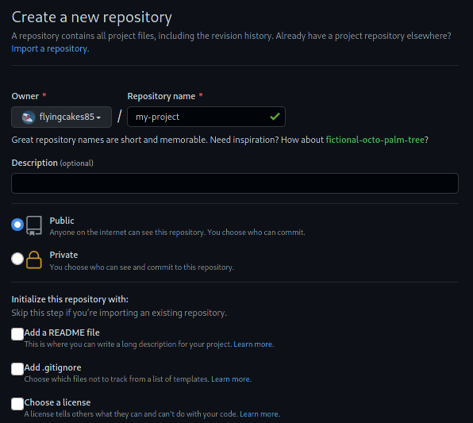
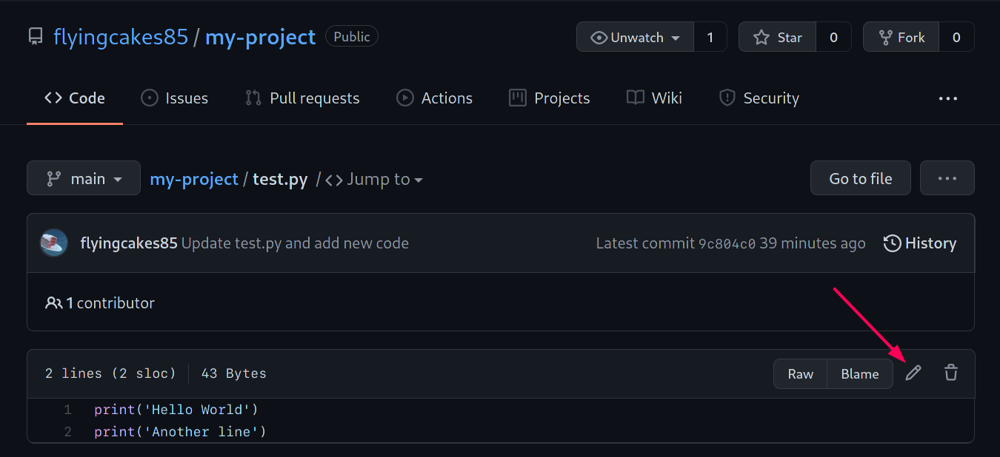
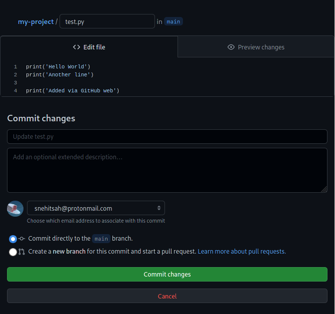
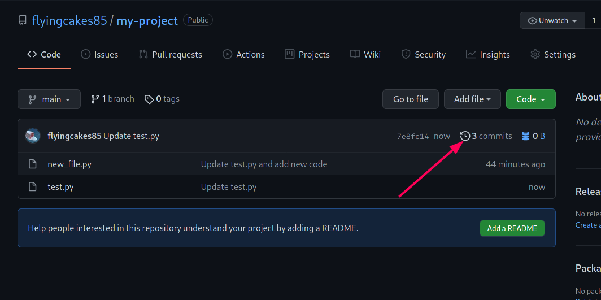

Working with remotes
Up until now, we have been working on our local system. Git however is built to facilitate collaboration of multiple developers. To let other developers work on our code, we need to publish this code to a website.
Now, you can upload your code anywhere. Zip it up and put on cloud storage like Google Drive or Dropbox. Or send the files as an attachment to your friend. There are many ways, but they won't preserve the commit history and messages (unless you include the hidden .git folder). Moreover, it will be difficult to use collaboration features of git.
It is much better to use a hosting service that is specially made for Git repositories. One of them is GitHub and that's the one which we will be using for this tutorial.
Head over to their sign-up page and create an account if not done already. https://github.com/join
Connecting a remote repository
Create a new GitHub repository at https://github.com/new. Give it a name. Description is optional. Make sure that all checkboxes under initialization are unchecked.

Create the repository. On the page you are redirected to, you have an HTTPS link under Quick setup.
Link is of the form https://github.com/<username>/<repo-name>.git. Copy this link.
In your terminal, you will now tell git to use this remote link for publishing on the internet. You use the git remote add command to do this.
git remote add origin https://github.com/flyingcakes85/my-project.git
Here, origin specifies the remote name. You can give it any name. origin is a common name for the primary remote location. Make sure you use your repo link in the command.
Before you push your branch, you first need an access token. Think of it as an alternate password to your account. For security reasons, using your actual password is not supported on GitHub. SSH is the easier way, but setting it up is out of the scope of this tutorial.
Head over to this link : https://github.com/settings/tokens. Click on "Generate new token". It may ask your password again.
Add a note to identify the token later. Check the first box which says "repo". It should automatically check the 5 boxes under it. Scroll down and click "Generate token". You will be redirected back to the token page where you can see your newly created token. Copy it to a file and store it somewhere you can access. While pushing form the terminal, you will use this token instead of your password.
Finally, you can push your branch to the remote.
git push -u origin main
It will ask your username and password. Enter your GitHub username only (not the complete link) and for password, use the token we just generated. Now on in this tutorial, I won't mention that you have to use this token, so keep it in mind.
-u is a shorthand for --set-upstream. It tells git that origin is the upstream for main i.e. the remote location where the main branch should be published. You might be wondering why we need to tell this? Git can work with multiple remotes, and often, different branches need to be published to different remotes. For any future push on this branch, you don't need to mention upstream, and simply running git push should do the work for you.
Pulling remote changes
Say someone else contributed to your repository. The changes they contributed will be stored on GitHub (or whichever remote you are using). You need to get the changes down on your machine. git pull is the command we use to get changes from remote to our local system.
Since we may not be able to find a contributor right away, so let us make changes ourselves on the remote. GitHub web interface allows making changes to code without needing to have repository on your local system. Head over to the repository on your GitHub account.
You will be able to see the files you added - test.py and new_file.py. Click on any of them, let's say test.py. You will see the code you wrote. On top right of the code, you can see a pencil icon that lets you make changes to file.

Add a some code and click "Commit changes".

Now, if you go to repository page, and click on the number of commits (see screen-grab below), you can see 3 commits listed. We made 2 commits earlier. The third commit was made just now via GitHub web.

Go back to the terminal and run git log --oneline. You will still see only 2 commits here. This mean we need to pull remote commits on to our local machine. Run git pull to do the same. Here is the output in my case
[snehit@wired my-project]$ git pull
remote: Enumerating objects: 5, done.
remote: Counting objects: 100% (5/5), done.
remote: Compressing objects: 100% (3/3), done.
remote: Total 3 (delta 0), reused 0 (delta 0), pack-reused 0
Unpacking objects: 100% (3/3), 709 bytes | 35.00 KiB/s, done.
From https://github.com/flyingcakes85/my-project
9c804c0..7e8fc14 main -> origin/main
Updating 9c804c0..7e8fc14
Fast-forward
test.py | 2 ++
1 file changed, 2 insertions(+)
You can see the text test.py | 2 ++. This mean that there were 2 additions made to this file. Deletions are followed by --. Now, if you run git log --oneline in terminal, you can see third commit too.
[snehit@wired my-project]$ git log --oneline
7e8fc14 (HEAD -> main, origin/main) Update test.py
9c804c0 Update test.py and add new code
5de911e Add test.py with basic code
Listing remotes
You can use git remote to list remote names configured for current repo, or pass the -v flag to also list remote links.
[snehit@wired my-project]$ git remote
origin
[snehit@wired my-project]$ git remote -v
origin https://github.com/flyingcakes85/my-project.git (fetch)
origin https://github.com/flyingcakes85/my-project.git (push)
Using git clone
So far we created a repository on the command line and connected it to a remote. Many times, we already have a git repo online which we want to use on our local machine. You can simply use the git clone command to download a repository. Note that you can download any public repository with this command even if you did not create it.
git clone https://github.com/flyingcakes85/my-project.git
Often, the repository you want to download is large, and downloading it can take some time. To get around this, you can use --depth=N flag to fetch only the past N commits. You will have all files from the repository, but you won't have complete commit history.
Editing published commits
Make some changes to a file and instead of a new commit, use --amend to edit the last commit.
echo "print('More content')" >> new_file.py
git add new_file.py
git commit --amend
Now, if you do a git push, you will get an error.
[snehit@wired my-project]$ git push
Username for 'https://github.com': flyingcakes85
Password for 'https://flyingcakes85@github.com':
To https://github.com/flyingcakes85/my-project.git
! [rejected] main -> main (non-fast-forward)
error: failed to push some refs to 'https://github.com/flyingcakes85/my-project.git'
hint: Updates were rejected because the tip of your current branch is behind
hint: its remote counterpart. Integrate the remote changes (e.g.
hint: 'git pull ...') before pushing again.
hint: See the 'Note about fast-forwards' in 'git push --help' for details.
There are two ways to get out of this situation - you either do a git pull --rebase to merge remote changes to your local copy first. Or you can do git push -f to force overwrite remote with your code.
If you were to do the latter, you will be changing the history of project. Anyone who has a copy of the project and does git pull will get a similar error.
The above error is also a common error when you made some change on your remote (via web interface) and then you made some commits on your local machine without pulling remote changes first. As I told, git pull --rebase should get you out of the fix in most cases.
Keep in mind, editing published commits is not recommended, and you should do this only when necessary.